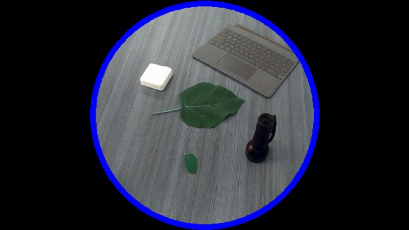
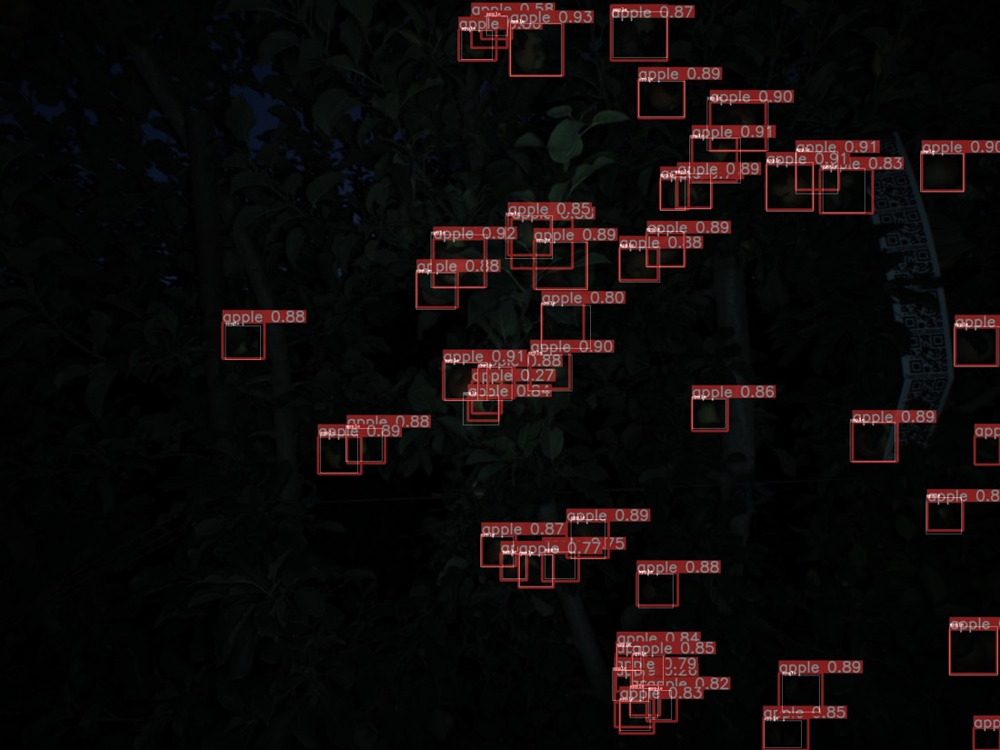

I build systems that see and measure things. Two summers as a Robotics Institute Summer Scholar at Carnegie Mellon, working on perception for a robotic apple harvester and real-time leaf segmentation. Before that, undergraduate research in machine learning and computational neuroscience. Now finishing a B.S. in Information Technology at Georgia Gwinnett College.
Four projects across robotics, computer vision, education data, and neuroscience, 2021 to 2023.
Carnegie Mellon University, Robotics InstituteSummer 2023Advisors: G. Kantor, A. Silwal
Leaf Size Analysis with Computer Vision
Python
OpenCV
scikit-learn
NumPy
Built a near-real-time leaf segmentation loop (camera capture → SVM pixel classification → mask overlay) as a non-destructive alternative to measuring plants by hand.
Cut prediction time 16× (about 4 s to 0.25 s) by downsampling frames and limiting inference to a circular region of interest, bringing capture plus prediction under one second.
Trained RBF-kernel SVMs in three color spaces. All scored 0.99 on held-out pixels, but live testing told them apart:
Space
Test acc.
Live behaviour
RGB
0.99
Strongest overall
LAB
0.99
Most robust to overexposure
HSV
0.99
Failed on shadows
roi: circular mask

A capture frame with the circular region of interest. Restricting inference to this region was half of the 16× speed-up.
Carnegie Mellon University, Robotics InstituteSummer 2022Advisors: G. Kantor, A. Silwal
Object Detection & Mapping for a Robotic Apple Harvester
PyTorch
YOLOv5
Mask R-CNN
ROS
Stereo depth
Trained YOLOv5 (small and medium) and Mask R-CNN apple detectors on orchard images, replacing hand-labeled frames in the harvester's perception pipeline.
Traced overfitting (mAP above 0.8, poor results on unseen data) to near-duplicate training frames. Rebuilt the training set by random sampling across the whole dataset, trading mAP (about 0.7) for much better generalization.
Wrote the data tooling: CSV-to-YOLO label conversion, an 80/10/10 train/val/test split, and prediction overlays.
Deployed the detector as a ROS node feeding bounding boxes into a stereo depth pipeline, then translated each apple's position into the harvester's reference frame so the arm could reach it.
yolov5: apple

Detector output on a night-time orchard test frame. Most apples are found with confidence between 0.80 and 0.93.
Georgia Gwinnett CollegeFall 2021Advisor: Dr. Dan Pinzon
Predicting Math Ability from Early Childhood Data
Python
pandas
scikit-learn
Jupyter
Predicted 5th- and 8th-grade math proficiency (high, middle, low) from early test scores, family income, parental education, and home computer use in the NCES ECLS-K longitudinal study of 21,000+ children.
Scaled the pipeline from a 124-variable extract to the full 18,928-variable file: dropped columns over 50% missing, removed later-grade variables to prevent target leakage, and filled gaps with iterative imputation.
Balanced classes by undersampling and compared 7 classifiers with 7-fold stratified cross-validation. An SVM reached 58% on the 3-class 8th-grade task, against 33% chance.
Georgia Gwinnett College2022Advisor: Dr. Cengiz Günay
Mini EPSC Analysis for a Drosophila Motor Circuit Model
MATLAB
Pandora toolbox
Signal processing
Wrote MATLAB scripts to detect spontaneous miniature EPSCs ("minis") in voltage-clamp recordings from the aCC motor neuron, comparing wild-type and bang-senseless seizure-mutant flies.
Band-pass filtered (20 Hz to 1 kHz) and normalized 5 recordings, compared 3 detection thresholds, and scaled amplitudes by cell capacitance (9 to 15 pF) to map results onto the model neuron.
Learned the Pandora toolbox with little onboarding and became the team's go-to for data-processing questions. Presented at CNS*2022 in Melbourne.
Projects
Robotics, hardware, games, machine learning, and web projects, from coursework to client builds.
Course projects · Spring 2024
Robot Perception & Planning
Georgia Tech, Introduction to Robotics & Perception6 simulated robots
A semester of autonomy problems, each solved in Python and most run on simulated robots in Webots.
Trash-sorting robot: implemented discrete and Gaussian probability distributions from scratch to classify items and choose actions.
Stop-sign detection: located signs with camera contours alone, then fused vision with LiDAR ranges.
Localization: particle filters on a grid world and in a simulated maze.
Planning and exploration: RRT path planning with path smoothing for a differential-drive robot, and frontier-based exploration of unknown maps driven by a state machine.
Python
Webots
Particle filters
RRT
LiDAR
Shipped · Feb to Apr 2023
Lane-Crossing Arcade Game for Android
Georgia Tech, Objects & Design6-person team
An Android game where the player hops across traffic lanes and a river of floating logs. Built over five sprints with UML domain, use case, and sequence diagrams.
Built the start screen, configuration screen, and navigation between activities, then the core game board, entity classes, and tilemap.
Implemented scoring, vehicle and river collisions, remaining lives, and the win screen.
Wrote unit tests, fixed Checkstyle issues, and refactored code smells such as long methods. Second-most commits on the team.
A stationary robot that spins distance sensors to map the room around it. The goal was a 360° scan that a computer could turn into a map of the space.
First design: a TF-Mini micro LiDAR on a pan-tilt bracket with two servos, for horizontal and vertical sweeps. The sensor and servos worked, but no enclosure I designed allowed movement on both axes, so I narrowed the scope to horizontal scanning.
Final design: a continuously spinning "lighthouse" head adapted from an Instructables build. VL53L0X time-of-flight sensors ride on a 60 RPM N20 gear motor, and a 6-wire slip ring keeps the wiring from twisting.
Wired the power and drive electronics (MT3608 boost converter, MX1508 motor driver) to an Arduino Uno base station.
Wrote a Processing sketch that reads distances over serial and draws each sweep as a radar-style map. Fabricated the enclosure with 3D printing and laser cutting.
Earlier course labs covered ultrasonic ranging, gyroscope and accelerometer reads, differential ADC sampling, and Morse code output.
Arduino C++
Processing
Time-of-flight sensors
3D printing
Laser cutting
Shipped · Jan to Apr 2025
Easter Date Calculator
Georgia Tech Junior Design5-person client project
A public educational site that computes Julian, Gregorian, and Orthodox Easter dates and explains the Computus algorithm with generated animations. I was backend developer and database manager.
Co-developed a 28-endpoint Flask REST API for the calculator, glossary, and forum, with session login and hashed passwords.
Designed the MongoDB document schema for users, posts, comments, and glossary entries; co-wrote the architecture and data storage sections of the design document.
Python
Flask
MongoDB
React
In progress
EducatED Choice
School-matching web app
Recommends Gwinnett County, GA schools to parents based on a survey filled out for each child.
Built a multi-step Likert survey that turns answers into preference tags stored per child in Firestore.
Now developing the recommender over a 141-school U.S. News dataset.
React
Firebase
Firestore
Team project · Spring 2025
NBA All-Star Prediction
Georgia Tech, Machine Learning
Predicts whether an NBA player becomes an All-Star from rookie-contract stats, to help teams decide which young players to build around.
Features cover each of a player's first four seasons (games, minutes, shooting percentages, rebounds, assists, steals, blocks, points) plus position and draft round.
Built and trained the team's models: random forest classifiers (200 trees, balanced class weights) for two targets. On a held-out set of 50 players they reached 90% accuracy for "All-Star within 4 years" and 92% for "ever an All-Star".
All-Star recall was 0.58 and 0.82, so most errors were missed stars. Feature-importance analysis showed which stats drove the predictions.
Python
scikit-learn
pandas
Matplotlib
Solo project · Spring 2023
Game Boy Advance Mining Game
Georgia Tech, Media Device Architecture
A game written in C that runs on Game Boy Advance hardware. The player is a miner who collects coins, attacks enemies, and finds the key that unlocks the exit door, with three lives.
Built the scrolling tiled backgrounds and a collision map that decides where the miner can walk.
Drew sprites from a sprite sheet through object memory with DMA transfers, and added sound.
Implemented the start, instructions, pause, win, and lose screens as a state machine, built over four milestones.
C
Game Boy Advance
DMA
Tile maps
More builds
Pet Health Management
A Java desktop app in model-view-controller layers for pet owners: accounts, pet profiles, medical records, and vet appointments, backed by PostgreSQL and SQLite.
Java
PostgreSQL
SQLite
Airline fare prediction
Led a team of two to build a model predicting U.S. domestic airfare between major cities.
Python
TensorFlow
Email spam filter
A Naive Bayes classifier trained on the Enron email corpus, with word-level features and concordance search to inspect what drives spam predictions.
Python
NLTK
Text-based dungeon crawler
Built with a team of four using the waterfall model, from UML design through a SQLite-backed game.
Java
UML
SQLite
Connect Four & Hill Cipher
A two-player Connect Four desktop game with win detection and alerts, and a MATLAB Hill cipher that encrypts phrases through matrix multiplication and decrypts with the modular inverse.
Java
MATLAB
Publications & presentations
2023
Leaf Size Analysis with Computer Vision
E. Nzewi, G. Kantor, A. Silwal. Robotics Institute Summer Scholars paper, Carnegie Mellon University.
2022
Mini EPSC Analysis of Synaptic Integration to Inform a Drosophila Motor Circuit Model
P. Del Rio, E. Nzewi, C. Gebremeskel, C. Günay. Poster, 31st Annual Computational Neuroscience Meeting (CNS*2022), Melbourne, Australia.
2022
Object Detection & Mapping for a Robotic Harvester
E. Nzewi, G. Kantor, A. Silwal. Robotics Institute Summer Scholars paper, Carnegie Mellon University.
2022
Mini Excitatory Postsynaptic Current Analysis in Drosophila Motor Neurons
E. Nzewi, C. Günay. Poster, STaRS student research symposium, Georgia Gwinnett College.
Skills
Languages
Python
Java
C
JavaScript
SQL
MATLAB
R
Kotlin
LC-3 Assembly
ML & vision
PyTorch
YOLOv5
Mask R-CNN
scikit-learn
TensorFlow
OpenCV
pandas
NumPy
NLTK
Web & data
Flask
React
MongoDB
Firebase
PostgreSQL
SQLite
Android
Git
Robotics & hardware
ROS
Webots
Particle filters
RRT planning
Stereo depth
Arduino
LiDAR & ultrasonic sensors
3D printing
Laser cutting
Education
Georgia Gwinnett College, B.S. Information Technology
Expected May 2027
Georgia Institute of Technology, Computer Science coursework
Data Structures & Algorithms · Linear Algebra · Discrete Mathematics for CS · Objects & Design · Computer Organization & Programming · Computer Networking · Media Device Architecture · Natural Language Understanding · AI Ethics & Society · Prototyping Intelligent Devices
2022 to 2025
Contact
Open to roles and research in computer vision, machine learning, and software engineering.